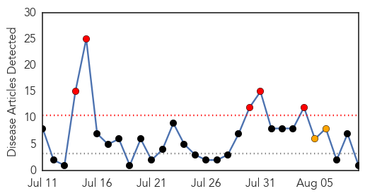
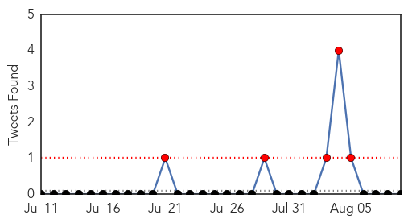
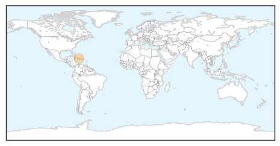

Cholera
30-Day Web Trend
5 alerts, 2 warnings

30-Day Twitter Trend
3 alerts, 0 warnings

Article Locations
Article Confidences

Top Articles:
- 0.970
- New hope for Haiti
Top Tweets:
-
No tweets found for Aug 09, 2014
Unknown
30-Day Web Trend
0 alerts, 0 warnings

30-Day Twitter Trend
5 alerts, 0 warnings

Article Locations

Article Confidences
Top Articles:
- 0.971
- Outbreak of TB in Atlanta
- 0.935
- DHMC Reports Rise in Cases of Hospital-Related Infection
- 0.932
- Tuberculosis kills 3 in Atlanta homeless shelters
- 0.917
- Chicago Tribune
- 0.917
- Chicago Tribune
- 0.917
- Chicago Tribune
- 0.917
- Chicago Tribune
- 0.917
- Chicago Tribune
- 0.917
- Chicago Tribune
- 0.866
- Russia's Lavrov discusses humanitarian mission in Ukraine with Kerry
- 0.866
- Obama speaks to Germany's Merkel about Ukraine -White House
- 0.866
- Islamic State militants tell 300 Yazidi families
- 0.866
- Lebanese villagers repel Islamists who crossed from Syria -Lebanese sources
- 0.866
- A girl plays as she holds onto a taxi through the flooded banks of river Ganga after heavy monsoon rains in Allahabad
- 0.866
- Bodysurfers and boogie boarders catch waves at Sandy beach on the east side of Oahu as Tropical Storm Iselle passes through the Hawaiian islands, in Honolulu, Hawaii
- 0.866
- Vice President Biden pledges U.S. support to Iraqi president
- 0.766
- New Lyme guidelines promote options and informed choice
- 0.710
- Tuesday meeting scheduled on Fort Polk water quality
- 0.706
- Teen's death confirmed as meningococcal
- 0.686
- HPV Vaccine Under Fire: 12-Year-Old Wisconsin Girl Dies Hours After Getting The Shot
- 0.565
- Comatose suspected leptospirosis patient transferred to Sibu – BorneoPost Online
- 0.555
- San Diego 6 News, The CW (XETV) – News, Weather, Traffic, Sports
- 0.541
- US drops more aid to Iraqis fleeing ISIS surge
- 0.541
- Surrounded Ukraine rebels ‘open to ceasefire’ in Donetsk
- 0.541
- France, Britain to join aid effort in Iraq, says Obama
- 0.541
- 33 years after shooting, Reagan aide's death ruled a homicide
- 0.541
- Israel, Hamas ramp up strikes, defying international peace efforts
- 0.541
- Guinea closes borders in bid to halt Ebola spread
- 0.541
- Egypt dissolves political wing of Muslim Brotherhood
- 0.537
- Mystery Texas Rabies Carrier has Health Officials Scrambling
- 0.531
- Sierra Vista neighborhood is told to boil water
Top Tweets:
- 0.573
- Agroexportadores podrán inscribir contratos hasta el 31 de agosto en la SET: La Subsecretaría de Estado de Tri... http://t.co/j2rbR57noO
- 0.553
- Capturan a uno de los principales distribuidores de Marihuana en Fernando de la Mora: Tenía en su poder al mom... http://t.co/htpPYW6kpN